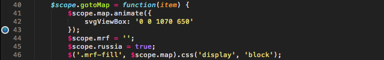
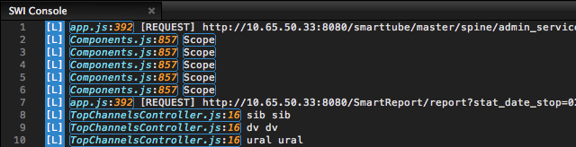
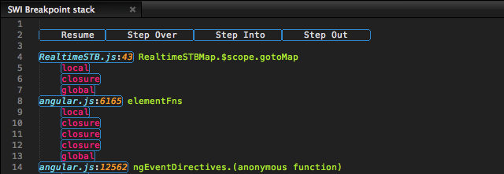
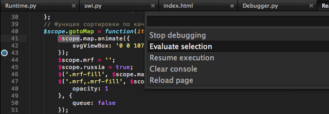

Let me introduce you Web Inspector!
Breakpoints
You can set and remove breakpoints right in the editor
Console
See all console messages with level
Interactivity
Click on name:line region bring you right to file and line, and if you
click on Object you can see object properties
Debugger
On breakpoints you can see a stack and all variables (local, global, closure)
Evaluating on call frame
Evaluate selection on current call frame
Live Reload
On file save cache will be cleared and page reloaded. If you save .css or .less file then styles only will be reloaded
Installation
Use package manger and install "Web Inspector"
comments powered by Disqus